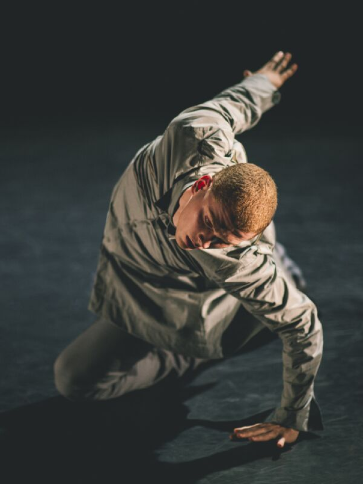
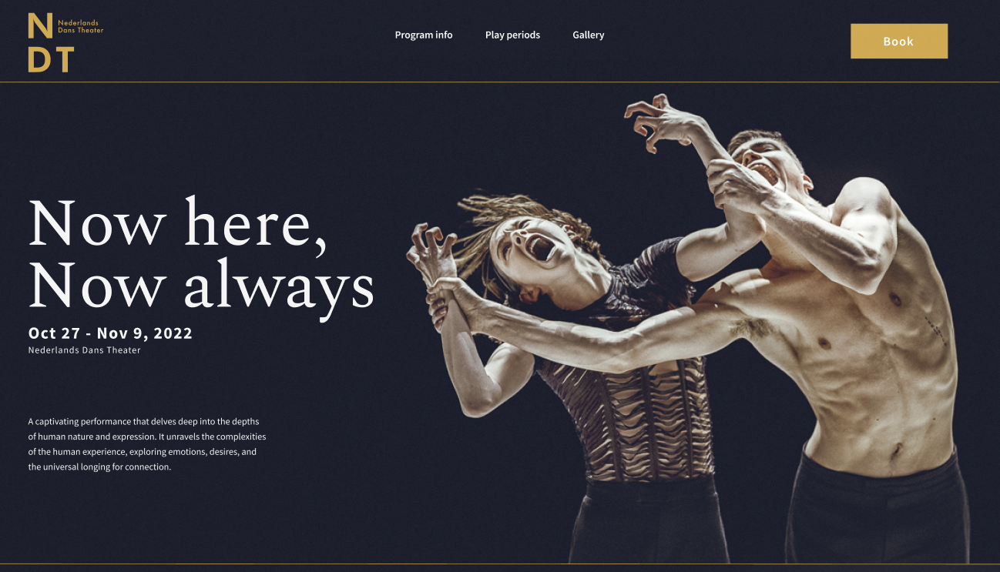
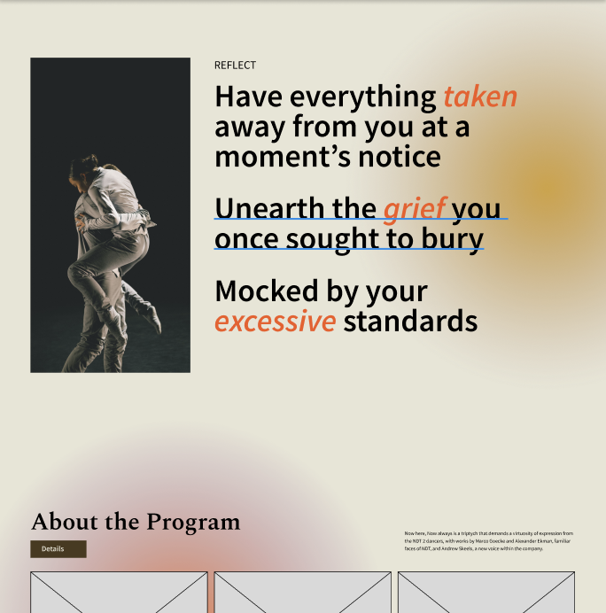
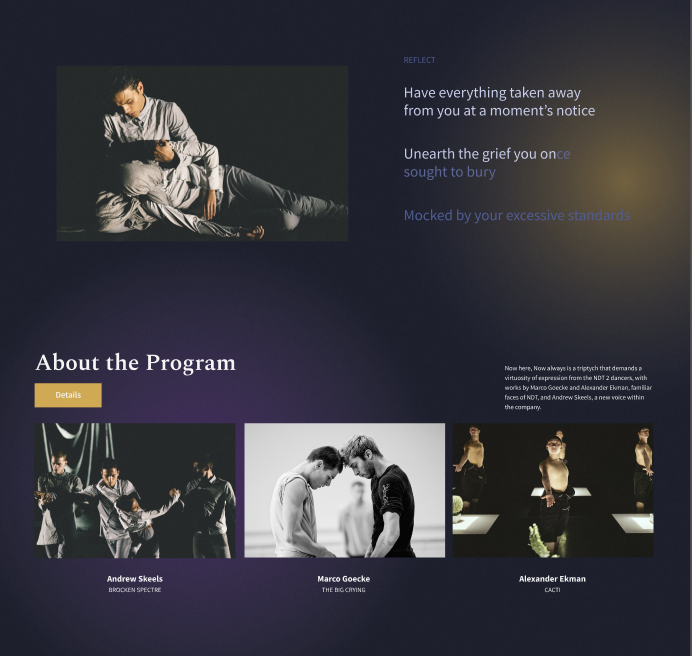
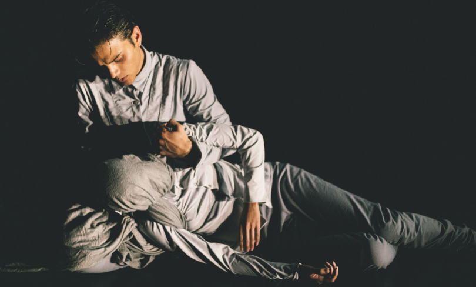

The Nederlands Dans Theatre (NDT) microsite was a team project to design a pre-event experience for the dance performance Now Here, Now Always. Being a pre-event experience, the website aimed to immerse users into the performance's world of heavy emotion and contemporary dance. The website speaks to the user with a unique gloomy yet spirtual art direction. Additionally, if users are interested in the event they can purchase tickets and use our payment process.
Nederland
Dans
Theatre

Getting a taste for contemporary dance

Designing for something I don't fully understand
This project was my first time developing an art direction in the realm of fine arts. My team and I struggled to find a way to show the paradoxical nuances and intensities of emotion, a major theme of Now Here. Now Always. At first experimented with warm colours with bright accents with the intention of communicating heigtened emotions like passion or joy but in the context of Now Here, Now Always, I thought it didn't suit the event. Most of the dance performaces were choreographed around a tragic loss of a loved one or feeling lost and alone.
After experimenting further with darker colours, I settled on a dark blue theme contrasted with vibrant hues of yellow and purple to balance the gloominess with optimism.The finalized colour palette communicates the eeriness of human emotions that strikes a balance betwen feeling somber yet curious. The warm yellow accents communicate a sense of optimism despite the overwhelming gloom while the purple acts as a neutral force to represent spirituality throughout our journies.


The file dilemma
During the intial stages of implementing our website, one person would make changes to the .html or .css files and the rest of us would download the file, make changes, and resend the file. This was a nightmare for the team so we began looking for alternatives to our primitive linear workflow. We eventually started a Git repository which allowed us to work both synchronously and asyncrhonmously to minimize editing conflicts. As a result, we removed any barriers to development such as waiting on someone to send updated files, and increased productivity by allowing multiple people to work on the website at a time.
Perhaps the most stressful part of this project was the fact that none of us had any experience creating websites. Our instructor gave us a two class HTML/CSS bootcamp which none of us understood but somehow managed to create a final product after way too many iterations and debugging sprints from mysterious margins and padding. The first takeaway from this experience is to establish a style guide early on to unify basic components, colours, and font styling to avoid major headaches down the line.
Final thoughts
I was quite happy with the way our project turned out. Although we had moments of frustration and fatigue, we found relief in our final product. This project taught me how to work together as a team of programmers. Organization is the key to success. Establish a system to sharing resources, and create a style guide to set the foundation of what is expected from the start. Shoutout to Tommy Lin, Jacquelyn Tang, Anita Kuo, and Jianting Liang for being a wonderful team.
